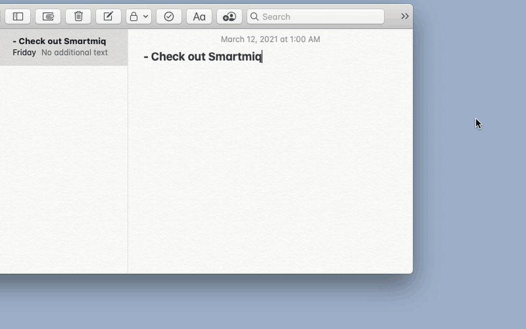

Current notes
- World models for agents: Qwen-AgentWorld, simulator fidelity, LLM-as-judge rewards, and sim-to-real transfer for agent rollouts.
- Multimodal architectures: two-tower AR + diffusion systems like Cosmos 3 / Nemotron TwoTower, especially feedback from generated states back into reasoning.
- Human signal: how to collect better eval, ranking, and preference data close to the agent workflow.
Research Notes
Small public experiments at the boundary of biological learning rules and artificial neural networks: sparse expansion, local plasticity, forward-only learning, and toy systems where the mechanism is inspectable.
- The Fly's Trick: Sparse Expansion as a Learning Prior - a small MNIST experiment inspired by the fly olfactory system, with code, references, and measured visuals.
Candor — Human Signal for Agent Workflows
Candor collects human feedback where AI builders already work: the terminal. It supports pairwise comparisons, ratings, labeling, product feedback, and AI-moderated interviews, then returns structured signal for evals, training data, and agent workflows.
I’m especially interested in where human signal fits into agent RL loops: judge calibration, high-disagreement cases, preference data, and evaluation rubrics that survive contact with real users.
Writing
Most short-form writing is on X: world models, multimodal architectures, real-time speech systems, eval loops, and the human signal that makes those loops useful.
EzDubs on Ray-Ban Meta Glasses
A quick demo of Paddy and me talking through EzDubs using Ray-Ban Meta glasses. This is the kind of product surface I like: AI that disappears into a live interaction instead of becoming another dashboard.
More EzDubs Demos
A couple more demos from the same product arc: real-time voice translation moving from model work into live user-facing surfaces.
RL, Rollouts, and World Models
Implemented Soft Actor-Critic with an AtariNet-style convolutional encoder. Training leveraged replay, MC rollouts, and importance sampling. I’m still interested in the same core problem today: how agents learn from simulated experience, how those rollouts are scored, and when simulated feedback transfers to real environments.
Training code: gist
Smartmiq Desktop Assistant
Spotlight‑style voice assistant for desktop. Trigger actions hands‑free (search, reply to Slack, etc.). I trained my own ASR based on a transducer architecture for tighter control over latency and accuracy.
What I learned: voice on laptops/desktops is useful but often slower than typing in public; UX must bias toward zero‑friction hybrid input (keyboard + voice), and ASR needs strong endpointing.

Replying to Slack by voice:
Noise Suppression Neural Network
Learned a spectral mask to suppress non‑speech noise, inspired by Google’s VoiceFilter. The model improves intelligibility in common home/office environments.
Rover — Music Visualizer via GAN
Mapped audio frequency features to a smoothed latent walk through a pretrained art‑DCGAN to generate synchronized visuals in real time.
- Compute frequency components per frame
- Integrate with previous latent for temporal smoothness
- Render GAN output to framebuffer
Code: github.com/kareemn/rover
Meeting Voice Assistant (Zoom/Meet/Webex)
Before high‑quality meeting audio APIs existed, I emulated webcam/mic drivers in a Dockerized headless Chrome to capture >16kHz audio for wake‑word and ASR, then scaled it across a Kubernetes cluster. We also used a virtual webcam to demo the bot live, a surprisingly effective growth loop.
Poynt Nay‑Nay
Built remote OS/app update tooling for payment terminals; for a stress test we pushed a music video to all test devices at once — chaos ensued.